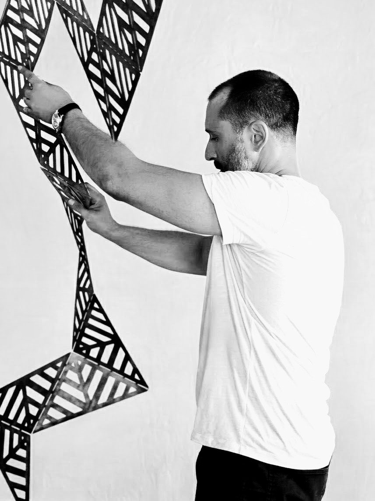

Nico Baldoni makes sculptural work that lives at the edge of light, form, and architecture. Each piece is a scaffold, built from material research, spatial observation, and cultural memory. The work isn't finished when the making is. It lives in you.
Born in Argentina. Based in Los Angeles. Founder of Forma Luz. Twenty years of work at the intersection of light, sculpture, and architecture — in private homes, public spaces, and hotels across the Americas and Europe.